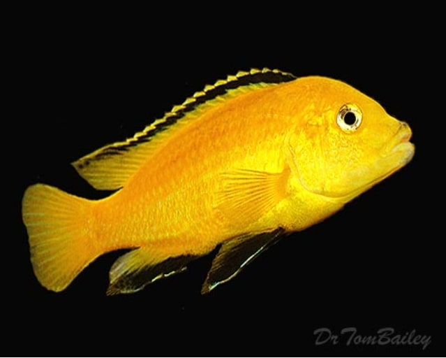
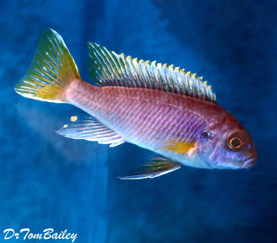
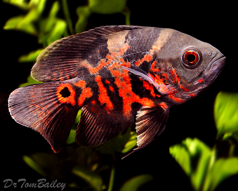

Ciclids are the perfect aquarium fishes for fish owners who want a colorful assortment of dancing fishes. These social and aggressive fishes primarily come from two places around the world, Africa's Lake Malawi and the tropical delta of the Amazon River in South America. to their aggressive behaviors, an intermediate-level knowledge of raising fish is recommended for future owners.
| Species | Appearance | Agressiveness |
|---|---|---|
| Electric Yellow Mbuna (Labidochromis caeruleus) |  | 🦈🦈🦈 |
| Cobalt Blue Mbuna (Maylandia callainos) |
|
🦈🦈🦈🦈 |
| Red Zebra Mbuna (Maylandia cichliformes) |
|
🦈🦈🦈🦈 |
| Golden Mbuna (Melanochromis auratus) |
|
🦈🦈🦈🦈🦈 |
| Yellow Tail Acei (Pseudotropheus acei) |  | 🦈🦈🦈🦈 |
| Maingano Mbuna (Melanochromis maingano) |
| Species | Appearance | Agressiveness |
|---|---|---|
| Red Oscar (Astronotus ocellatus) |

|
🦈🦈 |
| Tiger Oscar (Astronotus ocellatus) |  | 🦈🦈 |
| Firemouth Cichlid (Thorichthys meeki) |

|
🦈🦈🦈 |